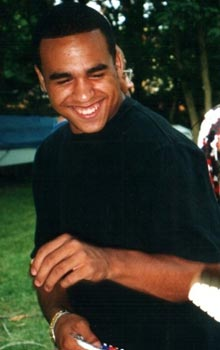

This is more than likely my favorite photo ever taken of me. This is a favorite highlight of my life considering I was in my favorite animation studio, which is in my favorite city in the world. Seeing a trend? Tokyo is indeed my favorite city and I can't wait to go back! Once I finish my degree of Web Design & Development, I intend on moving there for a year. I will teach English as I continue to sharpen my development skills on the side. This is a side of me that I have only recently started to develop. In fact, before attending Full Sail University, I actually went to Crane School of Music and the University of North Florida for a degree in Music Education! More on that later, but I think I finally discovered where my true loyalties lie. That is with technology and the rest of my inner "geekdom"!
On an even more personal note, my friends and family mean everything to me, because without them, I would be nothing. Being that they are my true primary groups, I will treasure them for the rest of my days, since they do the same for me. My parents are in enjoying it here in Florida, my brother was a "top 16" finalist in American Idol and my Dog Bella is the cutest little puppy in the world! So needless to say, I am very proud and happy with my family. Most of my best friends are still in New York, where I am originally from, but I have also made a few strong friends in the 6 years that I have lived in Orlando, Tampa, Jacksonville and Lakeland. Im quite the nomad!
I was born into a very musically inclined family. My great grandfather was the first African American to perform Ragtime in Carnegie Hall. It has been often said that he would be on par with Jazz legends such as Scott Joplin and Louie Armstrong, before he reached an unfortunate death by the hand of his drummer. My father was one of the founding members of the "Big Apple Band", later known as "Chic" who went on to perform "Freak Out!" My brother became a "top 16" finalist in American Idol and even wrote hits for artists like Jay Sean, Flo-Rida and Nickelodeon child-stars.
Turn up the pressure for me! I didn't care whether I became huge, but I did want to teach music since I was very young. However, things change and my hobbies forced me away from my music career. Even after making it very far in American Idol (wasn't televised) I still felt the need to do something different. I would rather be on a laptop in different countries and further myself in more interesting means. After all of the awards and scholarships I have won through college, I still felt like something was lacking. Sometimes I do miss that rush that one may get from performing on a stage, but I can easily satisfy that need from singing in front of people, if that even means karaoke! My hobbies through technology swapped to my profession and my profession of singing had swapped to my hobby. It's strange how life turns out! I am now so much happier than I was before! I hope one day I will become as good with e-commerce and web design as I was with performing.

Roles, Goals & Information.
Name:Jason Cotter
Age:27
Time Zone:EST (Lakeland, Florida)
Contact:jasoncotter@fullsail.edu AIM:jchollaa
I feel that my strengths rely in adaptation. I think this makes me able to perform most roles that do not require a specific skill-set. I feel that I can initiate, gather information, record, maintain and support. This also makes it possible for me to be a follower. But followers have the most important roles and I believe each situation may require a different leader depending on the actual task and who the group members are. We all have our strengths and weaknesses after all. For instance, in my degree program, I feel that I am a better developer than designer. I have always been into music, but not so much into general artistry.
I think that the goal of this class is not necessarily to make the best product in the world. Our goal should be perfecting our communication and working well to make a solid presentation, no matter what that may be. We need to honor and respect each other's opinions and work. We also need to pull our own weight and support every member in the group. If done correctly, we can succeed. This may cheesy, but it's certainly true.